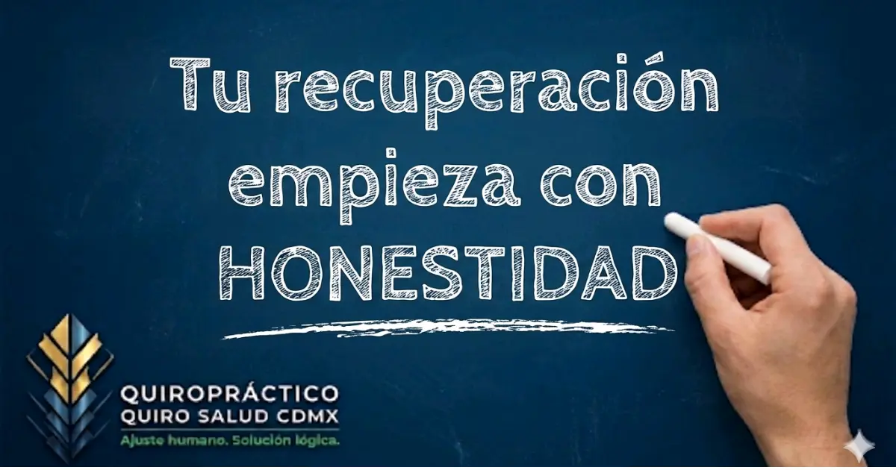

⚡
Ciática y Dolor Irradiado
Ese rayo que baja por el glúteo y la pierna, quitándote la fuerza y la tranquilidad para caminar o cargar a tus hijos.
Quiropráctico en CDMX — Gustavo A. Madero
Recupera tu movilidad sin falsas promesas ni paquetes comerciales. Un enfoque clínico honesto, basado en biomecánica y respeto al paciente.
El dolor no es el problema — es la señal. Aquí no silenciamos el síntoma; buscamos la causa lógica que lo genera.
Ese rayo que baja por el glúteo y la pierna, quitándote la fuerza y la tranquilidad para caminar o cargar a tus hijos.
Una tensión constante en el cuello que termina como migraña al final de tu jornada. No es estrés — es biomecánica.
El miedo constante a agacharte o hacer un movimiento brusco porque sientes que tu espalda va a trabarse de nuevo.
Diagnóstico en mano, sin claridad de qué sigue. La descompresión no invasiva puede ser una respuesta antes de la cirugía.
Adormecimiento en manos o pies que indica interferencia en tu sistema nervioso. Tiene origen — y tiene solución.
No es falta de sueño. Es tu sistema nervioso trabajando de más porque tu columna no está en alineación óptima.
Cada cuerpo es distinto. Cada plan de tratamiento también.
Corrección manual de subluxaciones vertebrales para liberar la interferencia nerviosa y restaurar la comunicación cerebro-cuerpo.
Reduce la presión en discos herniados o abombados mediante protocolos específicos — evitando en muchos casos la cirugía.
Optimización de movilidad articular y prevención de lesiones para atletas y personas con vida físicamente activa.
Reeducación de hábitos diarios para corregir los daños acumulados por tecnología, sedentarismo y malas posturas crónicas.
Ajustes suaves y seguros diseñados para mantener la movilidad, reducir el dolor crónico y prevenir caídas en adultos mayores.
Tratamiento especializado en zona cervical superior para reducir frecuencia e intensidad de dolores de cabeza de origen tensional.
Análisis profundo de postura, marcha y rangos de movimiento. Detectamos los fallos antes de que se conviertan en dolor.
La industria de la salud está saturada de "ofertas" que ocultan intereses comerciales. Aquí las reglas son distintas.
Nunca te pediremos que pagues 20 sesiones por adelantado. Tu cuerpo dicta el ritmo, no nuestro estado de cuenta. Sanar no debería ser una deuda.
Si tu caso requiere cirugía o un especialista distinto, te lo decimos en la primera consulta y te canalizamos adecuadamente. Tu tiempo y tu salud son sagrados.
No solo te ajustamos — explicamos el porqué de tu dolor desde la lógica vertebral. Queremos que entiendas tu cuerpo para que no dependas de una camilla, sino de tu propia salud.
Al finalizar, compartimos un enlace para que expreses tu experiencia libremente. Nuestras calificaciones son honestas, jamás coaccionadas. Eso vale más que cualquier campaña de marketing.

Antes de tocar tu columna, necesitamos entender tu historia. Nuestro Cuestionario de Salud Espinal nos permite analizar tu caso antes de que llegues al consultorio.
Llenas el cuestionario clínico (5 min)
Revisamos tu caso antes de tu llegada
Valoración inicial sin costo
Plan honesto, sin compromiso
Lunes a domingo · 10:00 AM – 8:00 PM · Cita previa 1 hr mínimo
¿Quieres saber qué tipo de atención se adapta mejor a ti? Responde el cuestionario Instinto →
Sin tecnicismos innecesarios. Sin rodeos.
No tiene por qué doler. Tomamos en cuenta la fisionomía de cada persona y no buscamos ir más allá de su límite de resistencia. Usamos pruebas previas y nuestra herramienta "Instinto" para conocer tus expectativas y nivel de estrés ante la terapia. Las expectativas del paciente influyen clínicamente en el resultado — por eso las medimos primero.
Rubinstein et al. (2019). BMJ; Eklund et al. (2019). European Journal of Pain.La valoración inicial es sin costo — incluye diagnóstico funcional y pruebas físicas. Si eres candidato, el tratamiento estándar es de $750 MXN. No pagas nada hasta que decides. Sin letras chiquitas.
Wong et al. (2017). Asian Spine Journal; Blanchette et al. (2016). PLoS ONE.No vendemos paquetes ni predecimos sesiones fijas. Primera sesión paliativa. Segunda, correctiva según evolución. No hablamos de tercera sin ver respuesta de tu cuerpo. Asegurar un número fijo de sesiones sin evidencia clínica es venta, no medicina.
Foster et al. (2018). The Lancet; Wong et al. (2017). Asian Spine Journal.Somos una clínica multidisciplinaria integral. Especialidad central: Quiropráctica clínica, de lunes a domingo, 10:00 AM – 8:00 PM, previa cita con al menos 1 hora de anticipación. También contamos con Masoterapia, Psicología, Flebología, Cirugía Plástica Estética y Spa Facial.
Kamper et al. (2014). Cochrane Database.Iniciativa preventiva exclusiva de los lunes. Costo: $550 MXN ($520 en efectivo o transferencia). Igual que cuidas tu higiene dental, tu columna necesita atención constante para no acumular desgaste. Cupo limitado.
Eklund et al. (2018). PLoS ONE.Servicio clínico completo disponible de martes a domingo. Incluye preparación muscular de tejidos blandos previa al ajuste — crucial cuando hay dolor agudo o tensión acumulada — seguida del ajuste quiropráctico correctivo. La preparación hace el ajuste más preciso, suave y duradero.
Goertz et al. (2018). JAMA Network Open; Gliedt et al. (2022). Journal of Chiropractic Medicine.Sesión colaborativa entre masoterapeuta y quiropráctico. Primero valoración clínica, después sesión completa de masaje terapéutico, y finalmente ajuste quiropráctico. Al trabajar sobre musculatura relajada, la corrección es más profunda y duradera.
Field, T. (2016). Complementary Therapies in Clinical Practice.Sí, con total confianza. En adultos mayores el enfoque es la calidad de vida, la movilidad y la prevención de caídas — no la velocidad del tratamiento. El ritmo y la intensidad se adaptan completamente a cada persona.
Whedon et al. (2015). BMC Geriatrics; Holt et al. (2016). JMPT.Priorizamos la ética médica y la confidencialidad del expediente clínico. No realizamos maniobras agresivas de espectáculo. Tu diagnóstico es privado, no contenido viral. Preferimos que salgas caminando mejor — no que salgas en un video.
Chretien & Kind (2013). Circulation; Farnan et al. (2013). Academic Medicine.No. Usamos "Tacto Clínico": encontramos el límite preciso donde la articulación corrige sin lastimarse. Un niño, un atleta y un adulto mayor reciben presiones completamente distintas. El sonido de cavitación es un efecto secundario — no el objetivo.
Herzog (2010). Journal of Bodywork; Alcantara et al. (2009). Explore.Sí, absolutamente. El cuidado en etapas de crecimiento corrige malas posturas por tecnología (text neck), previene escoliosis postural y apoya el sistema nervioso en desarrollo. Técnica 100% adaptada — presiones completamente distintas a las de adultos.
Newell et al. (2017). Frontiers in Bioengineering; Alcantara et al. (2009). Explore.La formación académica y clínica. Un quiropráctico tiene años de estudio universitario en anatomía, radiología y neurología. No adivinamos lo que movemos — lo sabemos con precisión. El enfoque es científico, no empírico ni tradicional.
Rubinstein et al. (2019). BMJ.Públicas, honestas, jamás coaccionadas.
"Servicio espectacular y explicación muy detallada. Jorge se toma el tiempo de explicar todo. Vale completamente la pena el viaje."
Ver reseña en Google →"Tenía un problema lumbar crónico por 10 años sin resultado con otros especialistas. Aquí encontré alivio real desde las primeras sesiones."
Ver reseña en Google →"Primera vez con un quiropráctico. Me transmitió confianza desde el primer momento. Ambiente limpio, cálido y completamente profesional."
Ver reseña en Google →"Tratamiento 100% profesional y, sobre todo, sin dolor. Lo recomiendo ampliamente a cualquier persona que dude en intentarlo."
Ver reseña en Google →"Trato profesional, experto y genuinamente humano. Se nota que saben lo que hacen y que les importa el resultado del paciente."
Ver reseña en Google →"Mi objetivo no es crear dependencia a la camilla, sino libertad de movimiento. La honestidad es la base de cada ajuste que realizo. Mi compromiso no es solo ajustarte — es enseñarte cómo funciona tu cuerpo para que no dependas de una camilla, sino de tu propia salud."
Quiropráctico Clínico · Quiro Salud CDMX
📍 Dirección
Ing. Antonio Narro Acuña 205-int. 3
Guadalupe Insurgentes, Gustavo A. Madero
C.P. 07870, CDMX
🕙 Horario
Lunes a domingo, 10:00 AM – 8:00 PM
Cita previa mínimo 1 hora de anticipación
📞 Teléfono
55 4182 6900